This archive starts from a dump of catalog assets with type Gear. Those should all be Tools. What we actually archived includes textures uploaded as Gear, Hats and Accessories sitting in the Gear aisle, items parked a thousand years in the future, names that never quite landed, drafts that were uploaded over and over then blanked out, and a pair of Tools that contain nothing at all.
These Roblox-created assets are type 19, but asset delivery serves a PNG instead of a model — each one an avatar texture uploaded into the Gear category by mistake.
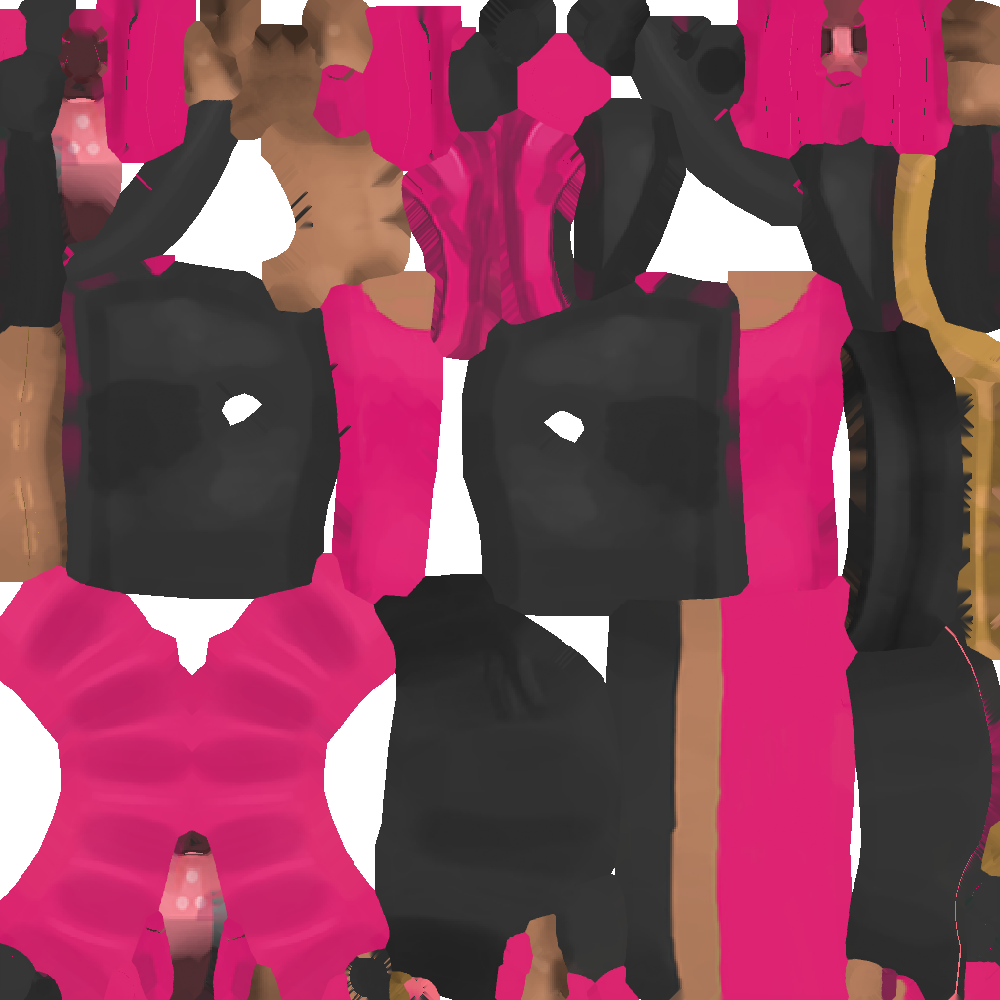
An unwrapped texture sheet for Zoey: The Fashionista — the black top, pink skirt, and limbs laid out on a single page. The bundle that shipped splits the same artwork into one smaller texture per body part.
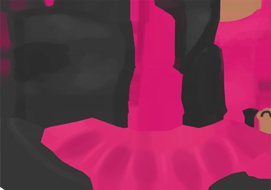
A draft of Zoey's torso texture. It is the same 388×272 size as the one Zoey Torso ships today and matches it across roughly 85% of its pixels, with the leftover paint around the edges still uncleaned.
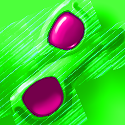
The frames and lenses of Neon Green Thumb Shades flattened out so the arms fold away to either side. The texture that accessory serves today is byte-for-byte identical to this file.
Twenty more dump IDs are type Gear, but asset delivery serves a Hat or Accessory — real ones, with a Handle, not the empty Hat that overwrote the June 2016 drafts. They stay out of the Tool archive; the catalog pages and the files they actually serve are below.
Roblox's thumbnailer expects a Tool on a Gear listing. When it gets an Accessory instead it gives up, and eight of these IDs share one blank 420x420 white square as their catalog image. The items are not empty — the files have Handles, meshes and textures — but the catalog cannot draw them.
Seven of the eight serve the same 6 KB file: a face accessory named DragonShades built on Roblox's evil-eye-patch mesh and texture. One upload, seven listings, none of which are named after sunglasses.
The closest published shades from the same era are Dragonscale Shades — a different file, not this one.
The eighth is 23307906, catalogued as Cooooool!!! and serving a Hat named DaVinci Helicopter. It is the same wooden copter as DaVinci Copter, published in 2009 — which does have a thumbnail, because it is filed as a Hat:
The other twelve draw normally, so the Gear aisle quietly shows a hairstyle, a scarf, a traffic cone with a face, and eight halves of four weapons. Their catalog names describe the accessory inside accurately — these were never meant to be Tools at all.
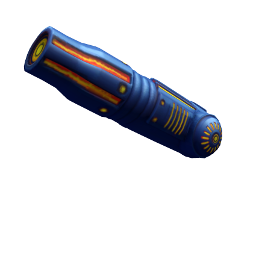
Badimo Arm Cannon ArmCannon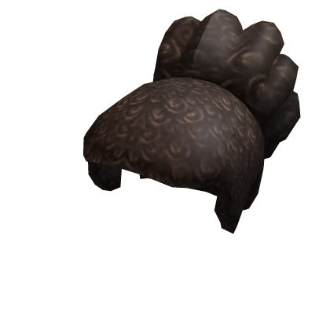
Xavier Woods Hair XavierWoods_HairAccessory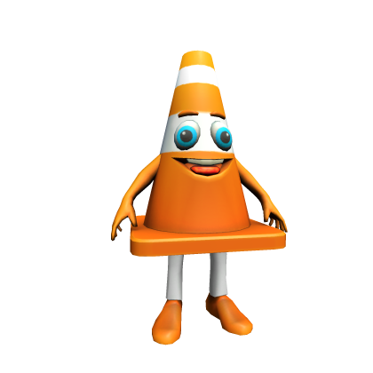
Coney Cone Companion Coneboy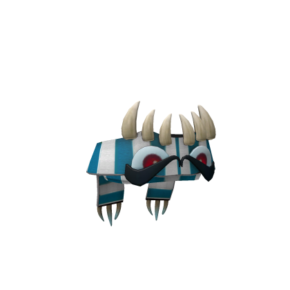
Snow Monster Scarf MonsterScarf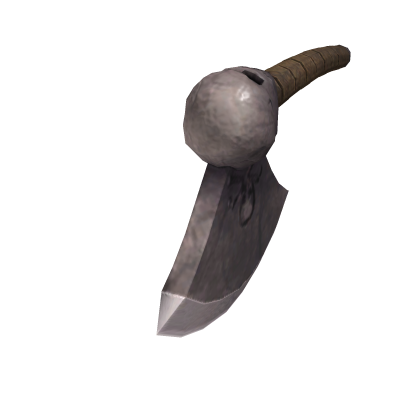
Axe Left Axe_Left_Acc_MP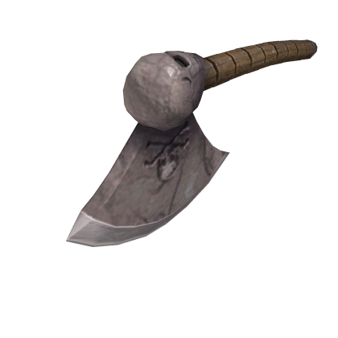
Axe Right Axe_Right_Acc_MP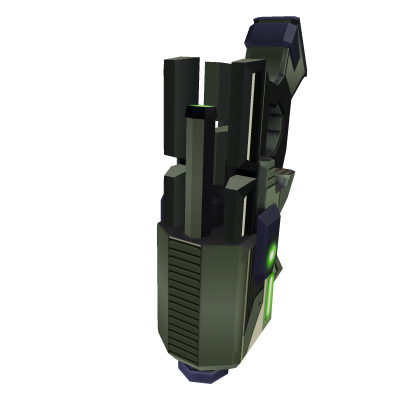
Gun Left Gun_Left_Acc_MP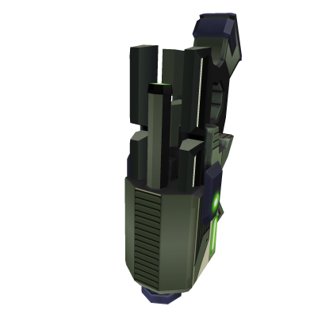
Gun Right Gun_Right_Acc_MP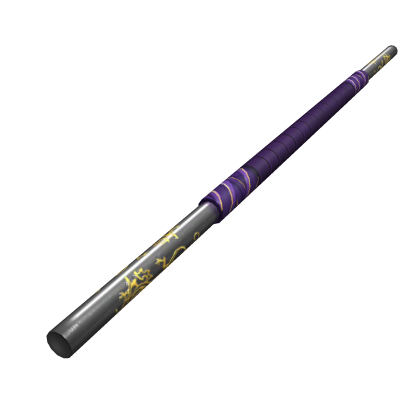
Staff Left staff_Left_Acc_MP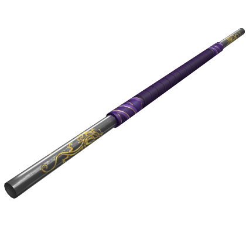
Staff Right staff_Right_Acc_MP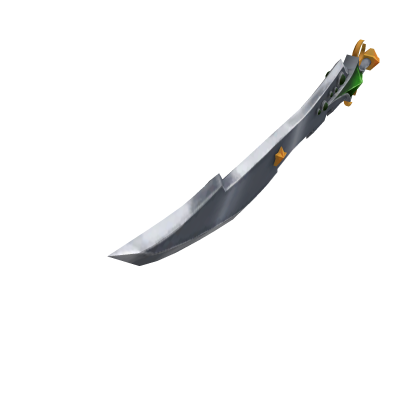
Sword Left Sword_Left_Acc_MP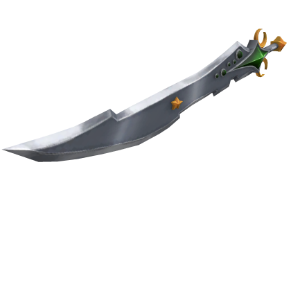
Sword Right Sword_Right_Acc_MPSnow Monster Scarf reuses the mesh family behind Monster Scarf, the 2015 neck accessory. Badimo Arm Cannon is an Accessory rather than a Tool, which is what separates it from Robo Arm Cannon and jmargh's Arm Cannon in this archive.
These 11 assets are delayed releases with on-sale dates parked roughly 1,000 years in the future. Public catalog APIs hide their metadata, even though thumbnails and catalog redirects still work.
2620442780 redirects as Icicle Kunai and sits in the delayed-release list above. The current asset version is an empty model. Version 1 is a Tool named RavenSword — a MeshPart handle plus a ThumbnailCamera — recovered into src/gear/2620442780 from that historical version.
Three nearby assets inherited the Tool name RavenSword, and a fourth never got a real catalog slug at all.
On the night of June 30, 2016, ten unnamed assets appeared in about 45 minutes. Version 1 on six of them is GoldenRailSplitterAxe — four files are byte-identical, then two slightly smaller copies. Version 1 on the other four is one 2016July4thFireworks binary. Around 1:00 UTC on July 1, every one of those IDs was overwritten with an empty Hat named Empty.
Ten minutes before the wipe, the real catalog items were created: Lincoln's Golden Rail Splitter and 4th of July 2016 Fireworks — the drafts are smaller than what shipped. The dump kept every ID, so the archive still has the version-1 Tools.
445132899 and 445146200 are those smaller axe drafts. The raw RBXMs omit the RightSlash Animation; the server script still waits for it, so the Tool never finishes loading. The other four copies and the shipped splitter include RightSlash.
{kind=link}
{kind=link}
{kind=link}